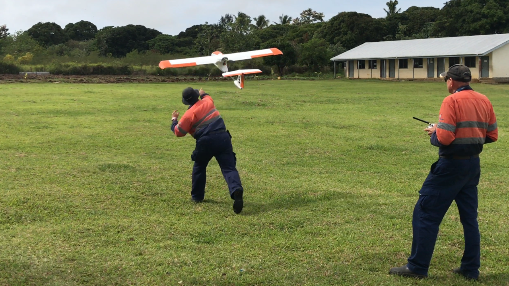

4. Determining Whether the UAV Is the Right Mapping Tool
UAVs may not always be the best mapping tool for a project. Before deciding whether to use a UAV, a satellite, or other tool, the project’s data needs, budget, and time frame must be understood. Table 2 lists some key factors to consider when deciding on the tool to use.
Table 8. Comparison of Survey Mapping_ _Methods
| Satellite | Airplane | UAV | |
| Approximate area covered in a day | 10,000 km2 | 750 km2 | 10–25 km2 (for a UAV equivalent to an eBee)a |
| Detail level | 30–50 cm/pixel | > 6–30 cm/pixel | 3–10 cm/pixel |
| Cost per 10 km2 | $$ | $$$ | $ |
| Cost per 1 million km2 | $ | $$ | $$$$ |
| Time to deploy | 24 hours–1 week | 3 days | 24 hours (provided flight permits have been granted) |
| Ease of deployment | Easy (once the satellite is in orbit) | Medium | Easy |
| Blocked by clouds | Yes | Depends on altitude | No (though may be blocked by fog and rain) |
| Blocked by wind | No | Yes | Yes |
| Regulatory burden | Low | Medium–high | High |
Note: The number of $ denote relative costs: least costly ($) to most costly ($$$$)
a. The use of a high-end UAV will allow a larger area to be captured. In Tonga, after Cyclone Gita in February 2018, approximately 40 km2 was captured per day using a Goshawk by V-TOL Aerospace Australia; see Figure 2.
When selecting a survey method, the scale and extent of the area of interest must be considered, along with the technical constraints of the project, availability of surveying equipment (to establish GCPs), and the method’s cost-effectiveness. For instance, to acquire baseline imagery of large areas at a resolution of 50 cm/pixel with a capture window of one year, satellites are most practical. On the other hand, a UAV is preferable for mapping a small footprint (e.g., small pockets of high-flood-risk areas, or a small and remote island community). More often than not, a single method is not used exclusively; rather, the various survey methods are used in complement to one another. For example, a group of small islands can be surveyed using a satellite or full-size plane every five years, complemented with local UAV survey updates every six months. The important thing is to establish a strategy that best captures the necessary data in the most cost-effective way.

Figure 2. Launching the Goshawk III Surveyor UAV by V-TOL Aerospace in Tonga.
Credit: UAV4Resilience 2017